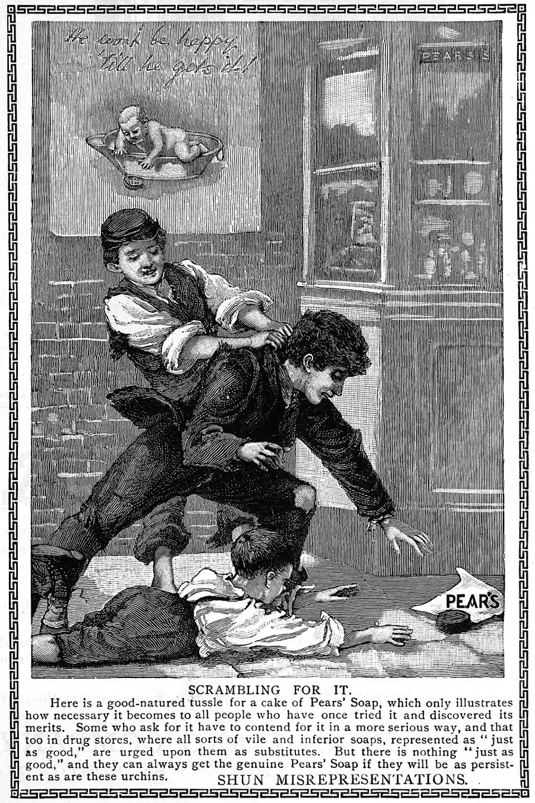
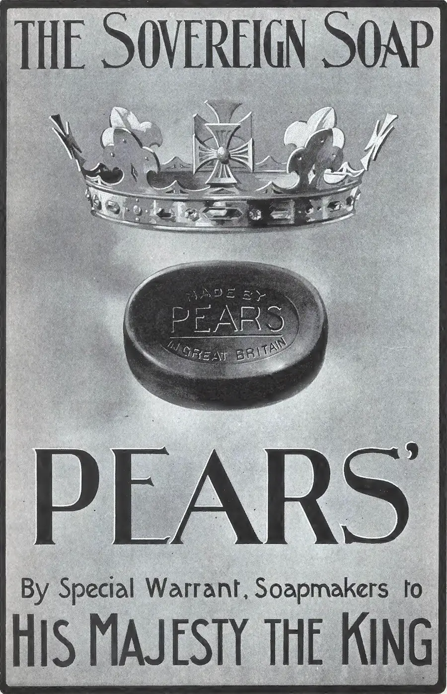
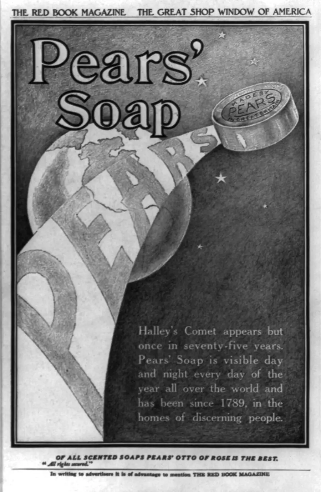

대표 로고대표 브랜드 마크
대표 로고대표 브랜드 마크Pears soap
Pears soap는 1807년 영국 런던의 Oxford Street 인근 공장에서 Andrew Pears가 만들어 판매한 비누 브랜드로, 세계 최초의 대중적인 투명 비누이다. 현재는 Unilever 산하 브랜드로 인도와 사우디아라비아에서 생산된다.
최종 업데이트
Pears soap는 어떤 브랜드인가
Pears soap는 영국에서 시작된 비누 브랜드로, 글리세린과 천연 성분을 기반으로 한 투명 비누를 대표 제품으로 한다. 광고 선구자 Thomas J.
Barratt의 주도로 여러 판매 및 마케팅 혁신을 도입했으며, 1882년에는 영국 배우이자 사교계 인사인 Lillie Langtry를 광고 모델로 기용해 상업 제품을 홍보한 최초의 유명인이 되게 했다. 1917년 Lever Brothers(현재의 Unilever)가 A.
Pears를 인수하면서 브랜드는 Unilever 산하로 편입되었다. 현재 Pears 브랜드 제품은 인도와 사우디아라비아에서 생산되어 전 세계로 유통된다.
인도에서는 Unilever가 지분 67퍼센트를 보유한 Hindustan Unilever가 생산을 담당한다.
Pears soap는 어떻게 시작되고 성장했나
Andrew Pears는 Cornwall 출신으로 1787년경 런던으로 이주해 Soho의 Gerrard Street에서 이발소를 운영하며 화장품을 만들기 시작했다. 당시 부유층 고객들이 사용하던 비누와 화장품 다수에 비소나 납이 포함되어 피부를 손상시키자, 그는 글리세린과 천연 성분을 이용한 순한 비누를 개발했고 이를 1807년 런던에서 처음 판매했다.
1835년 손자 Francis Pears가 사업에 합류하면서 회사명은 A. Pears로 바뀌었고, 1851년 대박람회에서 비누 부문 수상 메달을 받았다.
1864년 Thomas J. Barratt가 경리 담당으로 입사한 뒤 회사의 판매와 마케팅을 이끌었고, 1892년에는 A.
Pears가 공개 기업으로 전환되었다.
Pears soap의 브랜드 아이덴티티는 무엇인가
Pears soap는 세계 최초의 대중적인 투명 비누이자, Lillie Langtry를 기용해 유명인이 상업 제품을 광고한 최초의 사례를 만든 브랜드라는 점에서 구별된다.
Pears soap의 대표 제품과 서비스는 무엇인가
Pears soap의 대표 제품은 글리세린을 기반으로 한 투명 비누로, 우지 등 유지 성분을 알칼리로 검화하는 방식으로 제조된다. 현재는 지방산의 나트륨염 표기로 미루어 가성소다(수산화나트륨)를 사용하는 것으로 보이며, 1960년대에는 가성가리(수산화칼륨)가 쓰였다는 기록이 있다.
검화 후 남은 글리세롤은 그대로 배합에 남겨두며, 비누는 대형 가마가 아닌 작은 솥 형태의 용기에서 소량씩 제조된다. 응고된 투명한 호박색 액체는 불투명한 타원형 막대 형태로 압출된다.
Pears soap는 지금 어떤 상태인가
Pears soap는 현재 Unilever 산하 브랜드로, 인도에서는 Unilever가 지분 67퍼센트를 보유한 Hindustan Unilever가 생산을 맡고 있으며 사우디아라비아에서도 생산된다. 과거 Isleworth에 있던 생산 시설은 이후 Port Sunlight로 이전했고, Isleworth 부지에는 화재로 원래 공장이 소실된 뒤 Unilever의 화장품 개발 연구소가 들어섰다.
Pears soap 로고는 어떻게 변해왔나
대표 로고대표 브랜드 마크사진으로 보는 Pears soap의 역사



자주 묻는 질문
Pears soap는 어느 나라 브랜드인가요?
Pears soap는 영국의 뷰티·퍼스널케어 브랜드입니다.
Pears soap는 언제 설립되었나요?
Pears soap는 1807년 설립되었습니다.
Pears soap의 브랜드 아이덴티티는 무엇인가요?
Pears soap는 세계 최초의 대중적인 투명 비누이자, Lillie Langtry를 기용해 유명인이 상업 제품을 광고한 최초의 사례를 만든 브랜드라는 점에서 구별된다.
Pears soap의 대표 제품은 무엇인가요?
Pears soap의 대표 제품은 글리세린을 기반으로 한 투명 비누로, 우지 등 유지 성분을 알칼리로 검화하는 방식으로 제조된다.
Pears soap는 어느 기업이 소유하고 있나요?
Pears soap는 현재 Unilever 산하 브랜드로, 인도에서는 Unilever가 지분 67퍼센트를 보유한 Hindustan Unilever가 생산을 맡고 있으며 사우디아라비아에서도 생산된다.
출처와 검증
Pears soap 관련 참고: 위키데이터 Q4046564 · 영어 위키백과. 브랜드명은 한글과 원어를 함께 표기하되 데이터에 없는 표기는 만들지 않습니다. 기원 국가·설립연도는 검수된 정의문에서 확인된 값을 우선하고, 없을 때만 공식 웹사이트 URL이 일치하는 위키데이터 개체의 값을 씁니다. 위키데이터 값은 2026-09-27 기준입니다.